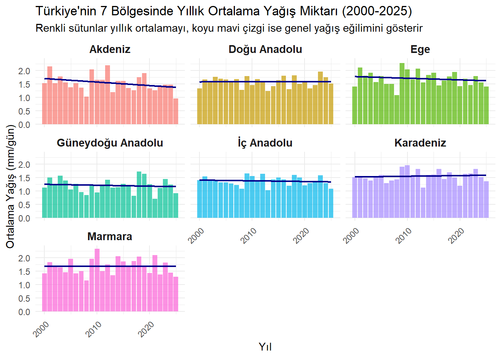

Kodu görmek için tıklayın
#| label: turkiye-tum-bolgeler-yagis
#| message: false
#| warning: false
library(tidyverse)
marmara_pr <- read_csv("data/marmara_precipitaion2000-2025.csv", skip = 9) %>% mutate(Region = "Marmara")
ic_anadolu_pr <- read_csv("data/içanadolu_precipitaion.csv", skip = 9) %>% mutate(Region = "İç Anadolu")
akdeniz_pr <- read_csv("data/akdeniz_precipitation.csv", skip = 9) %>% mutate(Region = "Akdeniz")
dogu_anadolu_pr <- read_csv("data/doguanadolu_precipitation.csv", skip = 9) %>% mutate(Region = "Doğu Anadolu")
ege_pr <- read_csv("data/egebölgesi_precipitaion_average2000-2025.csv", skip = 9) %>% mutate(Region = "Ege")
guneydogu_anadolu_pr <- read_csv("data/guneydoguanadolu_precipitation.csv", skip = 9) %>% mutate(Region = "Güneydoğu Anadolu")
karadeniz_pr <- read_csv("data/karadeniz_precipitation.csv", skip = 9) %>% mutate(Region = "Karadeniz")
turkiye_precip_all <- bind_rows(
marmara_pr, ic_anadolu_pr, akdeniz_pr, dogu_anadolu_pr,
ege_pr, guneydogu_anadolu_pr, karadeniz_pr
)
turkiye_bolge_yagis <- turkiye_precip_all %>%
group_by(YEAR, Region) %>%
summarise(Bolge_Ortalama_Yagis = mean(ANN, na.rm = TRUE), .groups = "drop")
ggplot(turkiye_bolge_yagis, aes(x = YEAR, y = Bolge_Ortalama_Yagis, fill = Region)) +
geom_bar(stat = "identity", alpha = 0.7) +
geom_smooth(method = "lm", color = "darkblue", se = FALSE, linetype = "solid", size = 0.8) +
facet_wrap(~ Region, ncol = 3) +
labs(
title = "Türkiye'nin 7 Bölgesinde Yıllık Ortalama Yağış Miktarı (2000-2025)",
subtitle = "Renkli sütunlar yıllık ortalamayı, koyu mavi çizgi ise genel yağış eğilimini gösterir",
x = "Yıl",
y = "Ortalama Yağış (mm/gün)"
) +
theme_minimal() +
theme(
legend.position = "none",
strip.text = element_text(size = 11, face = "bold"),
axis.text.x = element_text(angle = 45, hjust = 1)
)